Your Journey Through
the Stars Begins Here.
星を巡る旅は、ここから始まります！
scroll
星を巡る旅は、ここから始まります！

scroll

宇宙に関連する用語や天体などを紹介しています
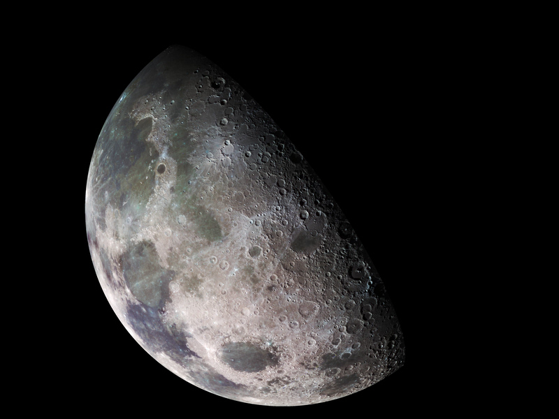
月は地球のたったひとつの衛星で、私たちのすぐそばにある天体です。 満ち欠けを繰り返し、潮の満ち引きを生み出すことで、地球をより住みやすい環境にしています。 地球の約4分の1の大きさでありながら、夜空で最も明るく輝く天体のひとつです。 人類はアポロ計画で月に降り立ち、今もさまざまな探査が続けられています。
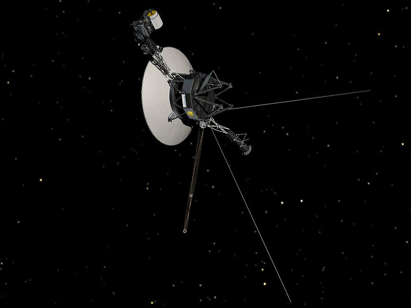
ボイジャー1号と2号は、1977年に地球を飛び立った双子の宇宙探査機です。 人類が送り出した宇宙船のなかで、太陽系を飛び出した唯一の探査機でもあります。 今も地球に向けてデータを送り続けており、「ゴールデンレコード」という、 さまざまな国の言葉や音楽が収められたディスクを搭載しています。
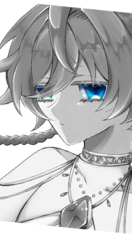
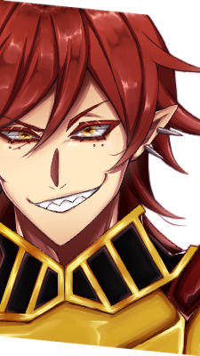
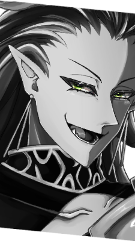
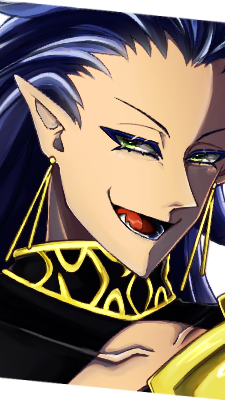
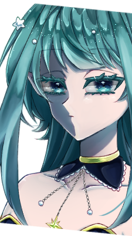
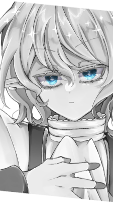
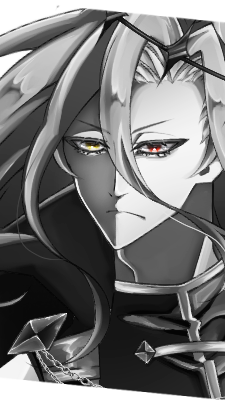
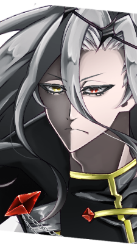
元々宇宙モチーフが好きだった私が
友人と訪れた
宇宙科学博物館 コスモアイル羽咋での
体験がきっかけです。
本物の宇宙船やさまざまな宇宙機材の展示、
シアターでの解説を見聞きし、その感動を形にしたいと思い、
このサイトを制作しました。
実際の宇宙探査機が撮影した神秘的な宇宙の写真や、
オリジナルの天体擬人化イラストを掲載しています。
ご覧いただく皆さまに、少しでも宇宙の魅力が伝われば幸いです。
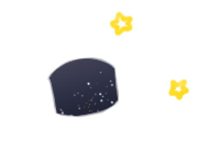
このフォームはダミーです。
ご連絡はポートフォリオトップのフォームからお願いします。